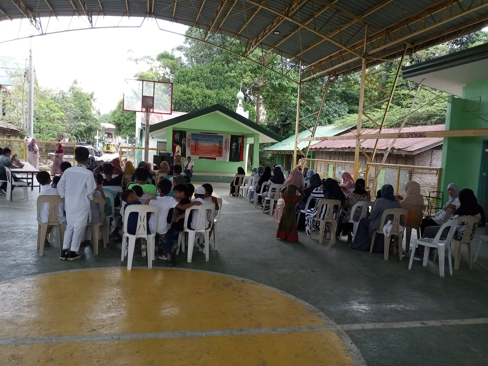

ABOUT
 As Sir Ustadz had mentioned, how the flooding in their area has greatly affected them. Floods in the area are concerning because they are one of the factors preventing the children and staff at the institution from contracting water diseases. They also have an impact on their schooling, the infrastructure around them, and the overall well-being of the community. It made me think about how we can be helpful citizens. In short, we should help them with their difficulties and seek alternative solutions that we can implement, as well as provide long-term help and support with their problems. Therefore, as we discover more about them, the more we will be able to help them with their issues and hopefully can help us make a plan wherein it is beneficial in the long run and gather help from other people too, also to take initiative to help the community.
Madrasatos Salam AL - IsIamia
Address: Purok 20, Sanggilanagan Ma-a, Davao City
Contact no. +63 997 297 8230
Contact Person/s: Montazer Lupon and Ustadz Ubpon
How to get there:
From ADDU JHS Straight to Acacaia St.Going Grade School Campus until you reach the Bubble Dragon Tea House in Camia St. turn left and straight until you reach the DCWD Office thenturnright To enter Mc Arthur Highway. From Mc Arthur Highway going to downtown you will see the S&R Membership Shopping on your left side about 150 mete rs,then turn left going Maa Road, Maa Road continue straight ahead, Until you reach Jollibee Maa turn left going to GEM Village Maa go straight until you reach the dead-end then turn right your are now in Sanggilanagn Muslim Village, your final stop.
HISTORY
Madrastos Salam Al-Islamia is the Madrasah school that is located in Davao City. Modern Muslim communities have developed madrasahs, or more generally, centers that are dedicated to providing Muslim youngsters with a solid religious education. They are providing the essential information and critical thinking skills of Islamic education to madrasah students. It is acknowledged that they will be able to create a firm sense of identity-based on their values and ideas to better meet our time's social issues. Every Muslim student who enrolls in a madrasah will have the Intellectual grounding and discernment they need to make informed decisions that uphold Islamic spiritual and moral standards.
MISSION
The mission of the organization exists because there are many Muslims, especially young Muslims, to put in the right place an educational system that is appropriate for the Muslim population. It also provides religious foundation in Qur'anic recitation and Islamic values. As a group our mission is to help our partner institution to provide and assist the needs of young muslims.
ORGANIZER
Madrasatos Salam AI-Islamia is a non-profit non-stock organization. Their aims and aspirations are that children are taught about Islamic identity and help them to feel a more secure environment. Attending a madrasah provides them with knowledge and skills about the fundamentals of Islam and it also teaches them Islamic faith and culture. Because of this children, attend ing madrasah will know how they will pray, fast, visit mosques, etc
BENEFICIARIES
Everyone benefits in this setting, including people of different faiths, Muslims, and Christians. I made this claim because I think that through this organization, the Muslim peoples will be able to learn more about promoting peace and understanding people of various religions in addition to the Arabic language. I also include everyone because I think that everyone can benefit from these concepts and that they apply to everyone, not only Muslims. And even though we already know that there are conflicts between Muslims and Christians, I also think that these groups will prevent any conflicts or misunderstandings between them.
BENEFACOTRS
The people who support the institution are those who are a part of the Ateneo community and those who have donated money to it. You can see that the CSLP is a group that urges us ADDU JHS students to appreciate and support our Muslim brothers and sisters in spite of the fact that we have different religious beliefs from them. This is why I brought it up. For students in grades 7 through 9, the CSLP is a curriculum-based community involvement and club from ADDU JHS. In addition, I believe that the ADDU JHS and others simply want to foster the unity and cohesion of Muslims and adherents of other faiths. The community members contributed to and established this institution in order to guarantee our personal well-being.
PAGTANIM
Ang napapanahong isyu sa aming komunidad na nangangailangan ng tugon ay ang pagbaha sa aming komunidad. Ito ay aming nasabi sapagkat aming nalaman na ang aming nakaparehang institusyon ay nangangailangan ng tulong sa kanilang komunidad dahil sa pagbaha. Samakatuwid, ang mga ganitong problema ay nangyari dahil sa mga kagagawan ng iba iba kagya na lamang ng pagtapon nila ng mga basura kahit saan. Ang karanasan na aming nararamdaman sa problemang nabanggit ay malungkot. Kami ay malungkot sapagkat ang mga ganitong problema ay nagbibigay ng mga epekto na maaaring makaapekto sa aming pang araw-araw. Kaya ang aming gagawing tugon upang aming malutas ang ganitong problema ay kami ay magpapatupad ng mga batas at alituntunin na maaaring makatulong sa aming mga nasasakupan. Mapapatupad namin ang tugon na aming ginawa para sa institusyon sa pamamagitan ng pagpapatupad nito para sa lahat. Ito ay aking nasabi sapagkat ang pagpapatupad nitong tugon na ito ay makakatulong upang malutas ang problemang kinakaharap ngayon ng komunidad. Kaya aming hinihikayat ang lahat na sundin at gawin ang mga batas na ito para sa ikabubuti at ikauunlad ng kanilang komunidad.